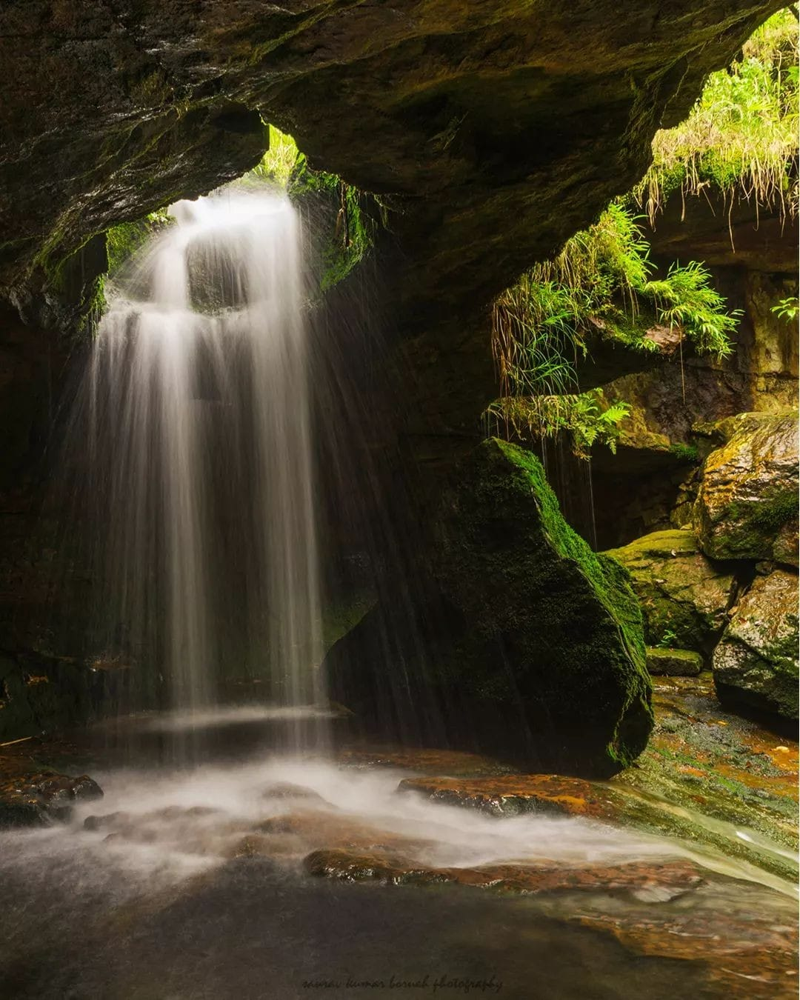

   <!-- <a data-aos="zoom-in-left" data-aos-delay="750" href="#culture">History</a> -->
        <!-- <a data-aos="zoom-in-left" data-aos-delay="900" href="#trip">Utility</a> -->
        <!-- <a data-aos="zoom-in-left" data-aos-delay="1150" href="#blogs">News</a> -->


<!-- <section class="book-form" id="book-form">

    <form action="">
        <div data-aos="zoom-in" data-aos-delay="150" class="inputBox">
            <span>where to?</span>
            <input type="text" placeholder="place name" value="">
        </div>
        <div data-aos="zoom-in" data-aos-delay="300" class="inputBox">
            <span>when?</span>
            <input type="date" value="">
        </div>
        <div data-aos="zoom-in" data-aos-delay="450" class="inputBox">
            <span>how many?</span>
            <input type="number" placeholder="number of travelers" value="">
        </div>
        <input data-aos="zoom-in" data-aos-delay="600" type="submit" value="find now" class="btn">
    </form>

</section> -->
       
       
       
       
       <!-- <div class="box" data-aos="fade-up" data-aos-delay="600">
            <div class="image">
                
            </div>
            <div class="content">
                <h3>Kerala</h3>
                <p>Alappuzha (Alleppey) is known as 'the Venice of the East'. This charming place is the hub of Kerala's backwaters and is home to a huge network of backwaters and more than thousand houseboats.</p>
                <a href="#">read more <i class="fas fa-angle-right"></i></a>
            </div>
        </div>

        <div class="box" data-aos="fade-up" data-aos-delay="750">
            <div class="image">
                
            </div>
            <div class="content">
                <h3>Meghalaya</h3>
                <p>Also known as the 'Scotland of the East', Shillong the capital of Meghalaya is a beautiful city encircled by pine trees. It has a soothing climate that makes it suitable to visit in all seasons.</p>
                <a href="#">read more <i class="fas fa-angle-right"></i></a>
            </div>
        </div>

        <div class="box" data-aos="fade-up" data-aos-delay="900">
            <div class="image">
                
            </div>
            <div class="content">
                <h3>Pratapgad, Maharashtra</h3>
                <p>Pratapgad is a mountain fort located in Satara district, in the Western Indian state of Maharashtra.The fort is situated 24 kilometres from the Mahabaleshwar hill station. The fort is now a popular tourist destination</p>
                <a href="#">read more <i class="fas fa-angle-right"></i></a>
            </div>
        </div> 

        <div class="box" data-aos="fade-up" data-aos-delay="1150">
            <div class="image">
                
            </div>
            <div class="content">
                <h3>Hampi!</h3>
                <p>One of the many structures that you must see in Hampi! It is traditionally known as Pampa-kshetra, Kishkindha-kshetra or Bhaskara-kshetra—is derived from Pampa, another name of the goddess Parvati in Hindu theology.</p>
                <a href="#">read more <i class="fas fa-angle-right"></i></a>
            </div>
        </div> -->


        <!-- <section class="services" id="services">

    <div class="heading">
        <span>our services</span>
        <h1>countless expericences</h1>
    </div>

    <div class="box-container">

        <div class="box" data-aos="zoom-in-up" data-aos-delay="150">
            <i class="fas fa-globe"></i>
            <h3>worldwide</h3>
            <p>We are connected worldwide through social media platform. You all can connect us there too.</p>
        </div>

        <div class="box" data-aos="zoom-in-up" data-aos-delay="300">
            <i class="fas fa-hiking"></i>
            <h3>adventures</h3>
            <p>Never forgetable moments will happen.</p>
        </div>

        <div class="box" data-aos="zoom-in-up" data-aos-delay="450">
            <i class="fas fa-utensils"></i>
            <h3>food & drinks</h3>
            <p>Provided to all the tourists.</p>
        </div>

        <div class="box" data-aos="zoom-in-up" data-aos-delay="600">
            <i class="fas fa-hotel"></i>
            <h3>affordable hotels</h3>
            <p>All the faclities are provided accorinding to the reasonable price.</p>
        </div>

        <div class="box" data-aos="zoom-in-up" data-aos-delay="750">
            <i class="fas fa-wallet"></i>
            <h3>affordable price</h3>
            <p>At all the stalls from food stuffs to outwears.</p>
        </div>

        <div class="box" data-aos="zoom-in-up" data-aos-delay="900">
            <i class="fas fa-headset"></i>
            <h3>24/7 support</h3>
            <p>For Touristers, guider is given to guide them.</p>
        </div>

    </div>

</section> -->